iMarket
Traditional markets are dense shopping areas for agricultural and marine products, meat, clothes, and retail goods. They have layout issues in which different types of vendors like meat, vegetable and marine products are mixed. Accordingly, customers might lose their way and cannot quickly find the vendors they want. The system helps users plan shopping routes and reduce time on finding vendors.
Tool used: Miro, Excel, Premiere Pro
What I did: Design test & evaluation, Demo video editor, User Experience research
Duration: 1 April - 14 June 2022 as part of Course Design Thinking at UQ
*Due to the COVID-19 lockdown, the project was completed in a remote mode. View the Project Report
 View the demo video
View the demo video
Background
The theme of research and design is "Encourage collaboration between people". We were asked to design site-specific technologies that promote collective experiences for certain groups of people at a site. We formed a team of four because we had chosen similar locations in our previous independent research.
During our first team studio meeting, we shared the results of our previous independent study and
discussed
the target site for our upcoming design. Combining the dataset from team members about observation and
interviews in the traditional market in their previous research. After discussion, refinement, and
extraction of the data, we summarised the following design opportunities:
We
brainstormed
many initial ideas for the design opportunities and discussed them with other groups.
- Traditional market vendors are scattered, and navigation systems are lacking.
- Problems with food hygiene and safety exist in traditional markets.
- There is a lot of plastic pollution in traditional markets.
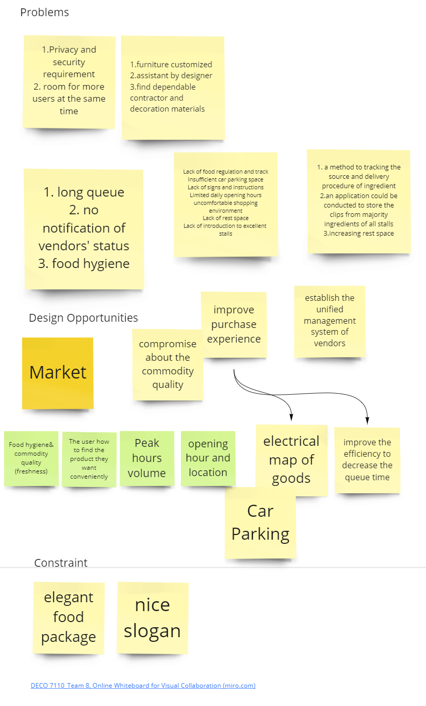
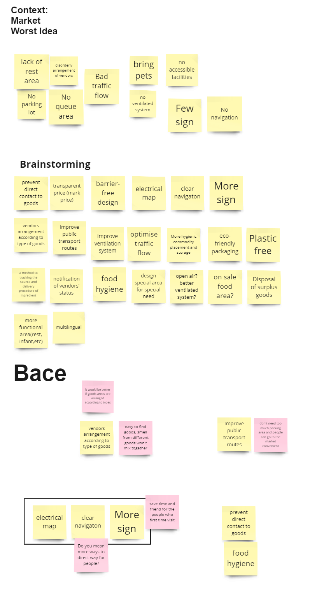
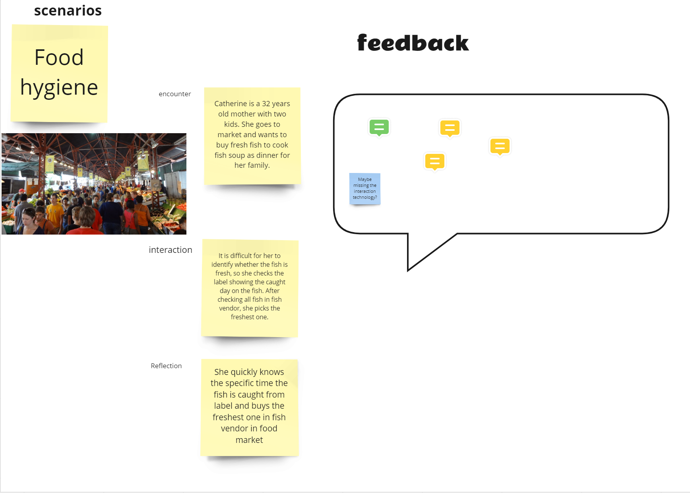
Research
- Observation
- Interview(3 participants were covered)
- Survey(79 participants were covered)
Research Method
Based on the analysis of the collected data, we found that the scattered layout of vendors and poor
functional design cause the most significant impact on the customer experience in traditional markets.
The proportion of affected users is also the largest.
Therefore, we decided to focus on the design opportunity of navigation and functional layout in traditional
markets. According to the research results, this issue usually affects new customers in the market, so our
target users will be focused on new customers who come to the market for the
first time or those who have no
experience purchasing from a traditional market.
Check the Report Appendices for the research data
Design-Timeline
We follow the design process of empathise-define-ideate-prototype-test to carry out our design work.*Indeed, the design process is not linear. We went through many iterations during the design process. However, for clarity, I will present the decisive design process linearly. 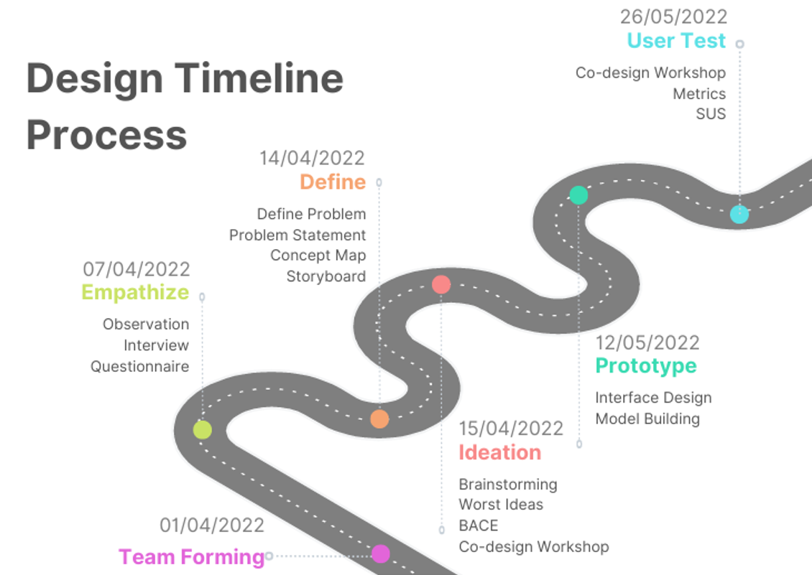
Design-Empathise
Based on the data we collected during the research phase, we created an empathy map to visualise user needs and reveal the critical problems that the users face.We divided the map into four quadrants, each
summarising a different aspect of the user's inner experience. Variables include what users see, hear,
do
and say and their psychological experiences. We added user gains and pain points at the bottom of the
empathy map.
The empathy map helps us develop a more comprehensive understanding, including their emotional
experiences, of our target users, thereby assisting us in better design ideation.
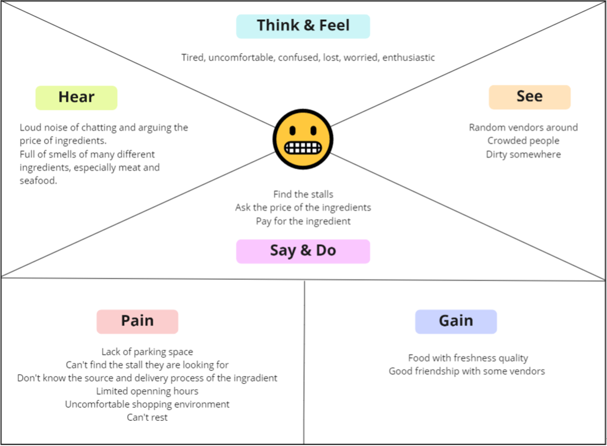
Design-Definition
In the definition phase, we identify the core issues of our target users and create problem statements. We used the strategy and scope layers from the Elements of User Experience (Jesse James Garrett, 2002) as the framework for our problem statements and summarised our design concepts accordingly. Check the Definition framework
After discussion, contemplation and design in the framework, we have summarised the definition of our
product concept and system requirements:
"The system is a navigation-like system
applied in traditional
markets, aimed at providing an efficient, convenient, time-saving, and user-friendly solution for users
who
are unfamiliar with traditional markets to find their way. The system will attempt to improve the
current
environment and layout of traditional markets, promote user collaboration in a more friendly
environment,
and reduce the negative emotion of target users, thus enhancing the user experience."
Design-Ideation
Our team conducted brainstorming during the ideation phase and created thumbnail sketches. We discussed our ideas in team meetings and tried to find feasible concepts that fit our design goals. 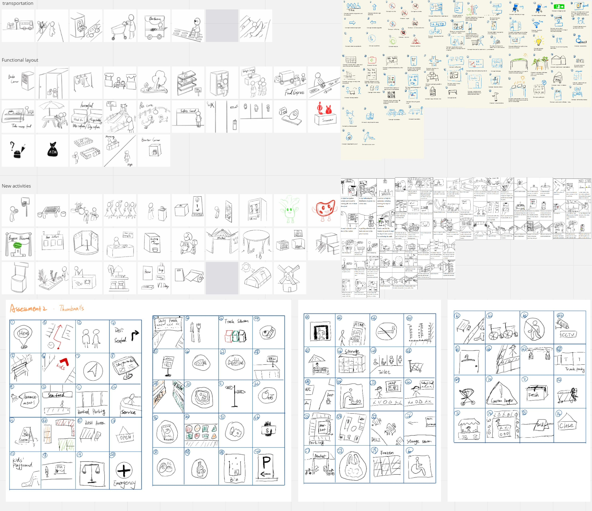
We organised and classified the ideas as follows:
- Design a new layout according to the product category the vendors sell, and distribute the same type of vendors together.
- Design representative colours for various categories of products and apply them to the navigation system.
- Provide the users with an overall map and route of the traditional market.
- Provide artificial assistance to target users ( users unfamiliar with traditional market environments), which may be provided by traditional market staff (such as setting up inquiry offices, AI robots, etc.) or other field personnel.
Based on the careful consideration of course requirements, user needs, and feasibility, we have selected
our
solution as follows:
"Providing a shopping basket for all users with different colours representing their user type when the market layout is well-positioned. A white basket represents the target user unfamiliar with the market layout and may need help with navigation. A black basket represents the fringe user who is a regular customer in the traditional market and can assist the target user. These baskets will indicate the type of products the user needs to buy. When the target user needs help, they can quickly identify regular customers who can assist them by the colour of the basket and determine whether the regular customer has the same destination based on the indications. If their destination is the same, the target user can follow or ask the regular customer for help."
After finalising the initial design concept, we communicate with the teaching team and other groups to
deepen and refine our design solution.
"Providing a shopping basket for all users with different colours representing their user type when the market layout is well-positioned. A white basket represents the target user unfamiliar with the market layout and may need help with navigation. A black basket represents the fringe user who is a regular customer in the traditional market and can assist the target user. These baskets will indicate the type of products the user needs to buy. When the target user needs help, they can quickly identify regular customers who can assist them by the colour of the basket and determine whether the regular customer has the same destination based on the indications. If their destination is the same, the target user can follow or ask the regular customer for help."
Co-design Workshops
We conducted a co-design workshop to demonstrate our ideas to others to obtain their opinions and unique perspectives on our design. We designed 4 activities to help us decide on valuable areas and suitable layouts in traditional markets. Check the Workshops detail
Prototype
To validate our design, we created a low-fidelity prototype for further user testing. Additionally, we also explored other methods, such as cardboard and 3D models, to allow us to verify and improve our ideas through rapid assessment and group reflection.
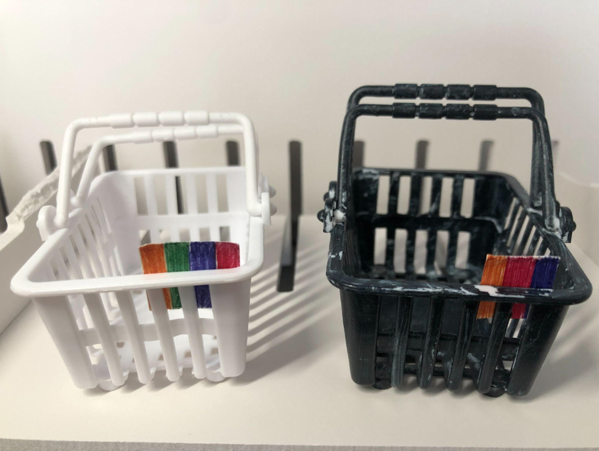
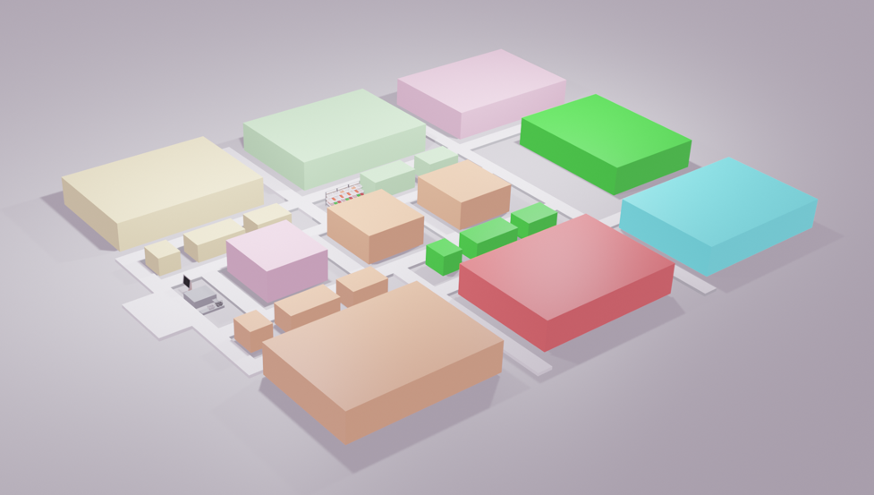
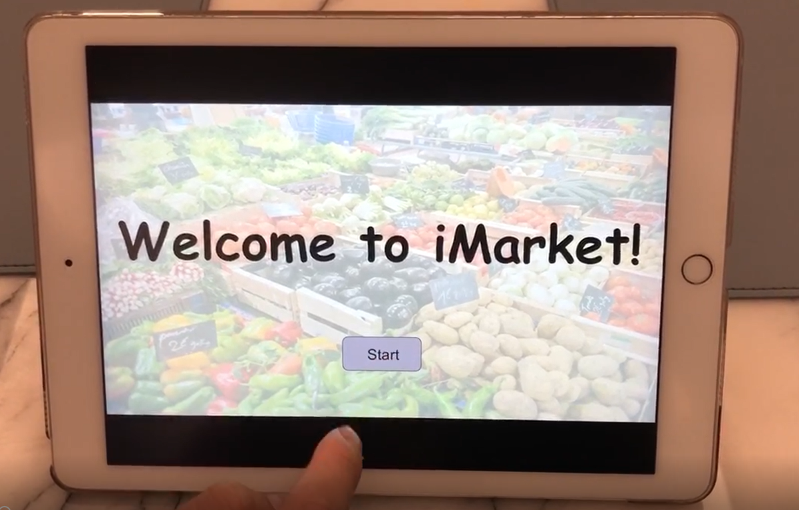
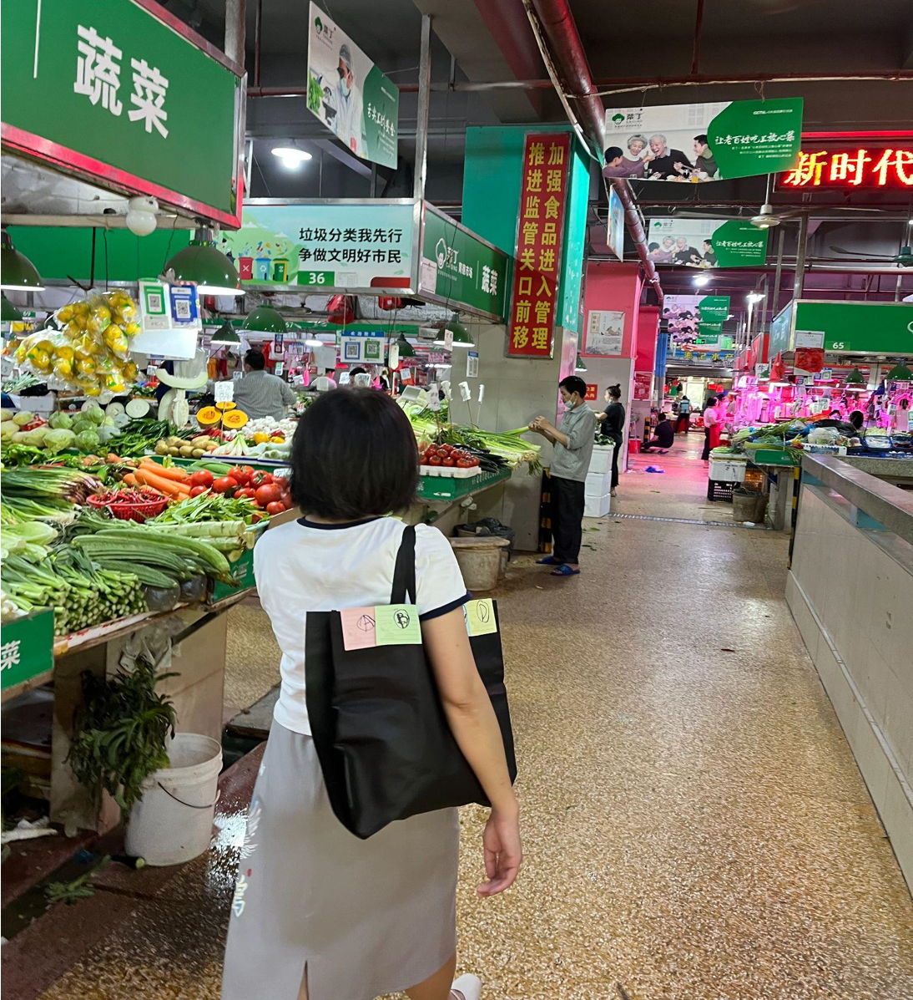
User Testing-Protocol
In the test phase, we invited ten participants of different ages to experience how it feels in various roles in the system by playing the roles of regular and new customers. Seven of them are our target users, people who don't go to the traditional market very much (no more than once a month), aged between 25 and 38. The other three are our fringe users, people who often go to the traditional market (more than three times a week), aged between 38 and 60. The test site was selected in a medium-sized market of about 400 square metres in Jiangmen City, Guangdong Province, China.
Layout optimisation requires a change in the layout of ample space, which is implemented in our current
situation, so in our user test, we will focus on the test of the user experience of the iMarket system.
In the test, we will artificially divide a specific market area into certain colour areas and inform the
participants who are regular customers.
In each round of tests, one participant acts as a new customer and one as a regular customer. We will have a
team member playing the role of a regular customer to ensure that each participant has not played a regular
customer before playing a new customer, that is, to ensure they know nothing about regional distribution.
The new customers will be asked to use the operation screen to select four areas required by the task and
will be given four colour tags of different colours in their bags. And each regular customer's bag will have
three colour tags of the same colour as the new customer's colour tags. The new customer must find two
regular customers to complete the navigation task. During this period, regular customers walk around the
traditional market and buy goods to simulate everyday market shopping.
User Testing-Metric
We use qualitative and quantitative evaluation methods in the test to evaluate our prototype.
For quantitative evaluation, we will use a scale and measurement method similar to SUS (System Usability
Scale) to analyse and evaluate the degree to which the system promotes user collaboration. We will also
roughly cover usability evaluation. We call this the CPS (Collaboration Promotion Scale).
Our Collaboration Promotion Scale consists of eight questions, the responses to CPS are done on a scale
of 1
to 5, where 1 means strongly disagree and 5 means strongly agree.
Five of scale are designed to evaluate the promotion of collaboration between users, two to evaluate usability, and one to conduct an open assessment to inspire later interviews. Of the eight questions, there are five positive questions and three negative ones. When we deal with the raw data, we will convert the data according to the way SUS handles it (Sauro, 2011).
Five of scale are designed to evaluate the promotion of collaboration between users, two to evaluate usability, and one to conduct an open assessment to inspire later interviews. Of the eight questions, there are five positive questions and three negative ones. When we deal with the raw data, we will convert the data according to the way SUS handles it (Sauro, 2011).
- I think I'd like to communicate with regular customers.
- I have no impulse to communicate with regular customers.
- I think it's easy to talk to regular customers.
- I think I need more encouragement to talk to regular customers.
- I think there is a friendly atmosphere among customers.
- I would love to use this system frequently.
- I think this system is very helpful to my shopping experience.
- I encountered difficulties in using the system.
CPS scale
For qualitative evaluation, we will observe and record the test process of the participants, conduct
interviews for them at the end, record their feedback and analyse it.
User Testing-Quantitative Evaluation
For CPS, we are using a similar method of SUS to convert the data to make sure the final data is neutral, and the higher the score is, the better the performance is. In the end, we have boxplots for each question to interpret. 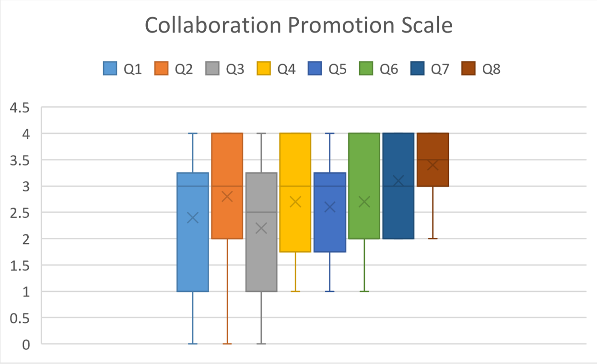 After analysing the data, the participants gave a relatively high evaluation of the usability of our system, indicating that our system had no obvious usability issues.
However, although the participants gained some collective experience in the evaluation of collaboration,
it
was still insufficient and did not fully satisfy them.
The results of communicating with regular customers reflected individual differences in the social
experience of users with different personalities in our system, which significantly impacted their system
experience.
Based on the scale, we can conclude that iMarket is a capable and usable user collaboration system.
User Testing-Qualitative Evaluation
We recorded the users' behaviours during the testing process. And we further confirmed the data obtained from observation through interviews and collected data on users' experiences during the interviews. Check the observation & interview data
Check the observation & interview evaluation
According to the evaluation of observations and interview data, the iMarket system promotes collaboration
among traditional market customers, which was almost non-existent before the emergence of iMarket (novel).
Additionally, iMarket does help to address the problem of user experience decline caused by poorly designed
market layouts and navigation systems.
Check the Method and process reflection
Check the Future Direction
View the Project
Report
View the demo video
The above is the design process of the iMarket, welcome to click the links to
view the demo video or check the project report. Our team also reflected on the design process and
discussed the future direction of the project. Please click the link to view.
Or please feel free to browse my other works :)
Reference
Garrett, J. (2002). Elements of User Experience, The. Pearson Education Inc.
J. Sauro(2011). “Measuring usability with the system usability scale (SUS),” MeasuringU, 03-Feb-2011.
[Online]. Available:https://measuringu.com/sus/. [Accessed: 09-Jun-2022].